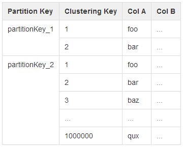

C*@ING
3 challenges, 3 facts, 3 questions
Created by Christopher Reedijk (@creedijk) and Gary Stewart (@Gaz_GandA)
Dev Engineers, ING Netherlands

ING Nederland (@ingnl)
Short introduction
 |
|
| Christopher Reedijk | Gary Stewart |
|
|
challenge 1
Improve availability
without trading consistency
Consequences of not being available


source: nu.nl
Consequences of not being consistent

challenge 2
Aim to be easier scalable
Changes are happening at an increasing pace
Stop focusing on the
expected load
yesterday
source: bradfrostweb.com
Start focusing on the
unexpected load

| today | tomorrow |
| source: bradfrostweb.com | |
challenge 3
Adopt new ways of thinking
Become the top engineering company
ING's culture is changing fast.
Waterfall to Scrum to DevOps in less than 2 years
Pre-conceived ideas still need to be cleared
Cache is bad, when used incorrectly
Need for locking (transaction) everywhere
Every domain for themselves
Improve availability
Aim to be scalable
Adopt new ways of thinking
C* to save the day

fact 1
Availability is easier
Proof
Masterless architecture
No outages in contrast to master-slave architecture
This does make C* chatty
Replication of data
Replication factor is configurable per keyspace
Increasing nodes does not mean higher availability
Increasing the replication factor does
fact 2
Performance is easier
Proof
Solve your reads with your writes
De-normalization is acceptable for solving reads
Know your partitions
Large partitions will hurt!
Linear scalable
Adding nodes will increase your throughput through sharding

source: Datastax
fact 3
Consistency is harder
Application developer has much more responsibility
Focus on the data model and the flow of data is key
noSQL versus SQL
CAP theorem
Consistency (all nodes see the same data at the same time)
Availability (a guarantee that every request receives a response about whether it was successful or failed)
Partition tolerance (the system continues to operate despite arbitrary message loss or failure of part of the system)
Transactions and queuing are anti-patterns
C* v2.0 reduces the complexity by using lightweight transactions (paxos)
Availability is easier | challenge 1: availability & consistency
Performance is easier | challenge 2 easier scalable
Consistency is harder | challenge * availability & consistency, easier scalable, new way of thinking
all challenges covered...
question 1
What risks do we have with
2 DC's and using Write/Read CL of LOCAL_QUORUM?
Split-brain

Who wins? Neither side knows the other side!
CAP theorem - choose wisely
Use QUORUM but risk availability
when there are issues with the WAN link
Arrange a third DC... €€€
Applications apply DC stickiness
whilst processing data which increases complexity
question 2
Does QUORUM read and QUORUM write guarantee consistency?
No - it gives strong consistency
NTP must be set-up correctly
Know your flow of data
Model as idem-potent-ly as possible

question 3
Will C* solve all your IT issues?
No - but it will help solve a lot of your problems
Performance and availability are tuneable based on needs and costs
Consistency is solved by design and knowing the flow of data
Going from SQL to noSQL is a paradigm shift
Skills are not readily available
Some issues are better solved by relational databases
Thank you
...graceful bowContact
christopher.reedijk@ing.nl
gary.stewart@ing.nl
We're hiring!
this presentation is created using:
reveal.js